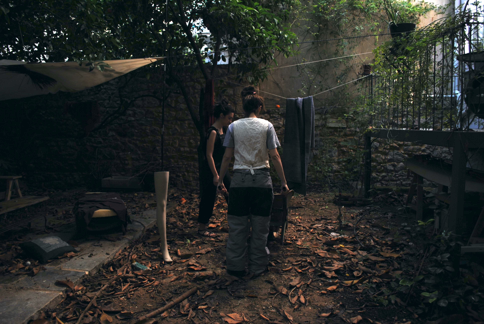
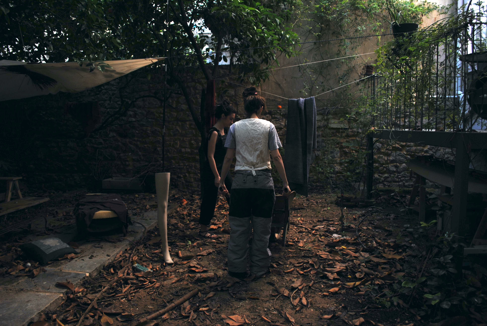

"Hivemind”
 

Role/Contribution: Event Coordinator & Artist.
Participating Artists: Angeliki Papageorgiou, Magia Papakosta & Sotiria Smirnaiou.
Description:As an Event Coordinator and Artist for this collaborative studio space event, I showcased the talents of indigenous Athenian artists, aiming to highlight local creativity while fostering meaningful artistic dialogue within the community. My contribution included a video and sound art projection loop featuring a 3D representation of my head, accompanied by an experimental soundscape—an amusing commentary on the state of Athenian art at that moment. The event not only celebrated diversity but also poked fun at the quirks of the local art scene, inviting attendees to reflect on who "THE OTHERS" are in a city rich with cultural narratives.
Process: As the event coordinator, I managed logistics and collaborated with fellow artists to curate a diverse range of works that represented their unique perspectives. My own artwork incorporated interactive elements designed to encourage viewer participation and engagement, enhancing the overall experience.
Outcome: The event was met with enthusiasm, generating insightful discussions about local art practices and community identity. Attendees valued the opportunity to engage directly with artists, fostering a sense of connection and collaboration.
Video-sound Projection: Click here for the video
3D sculpture based on a real sculpture i was working on, doing my research-study on human head.